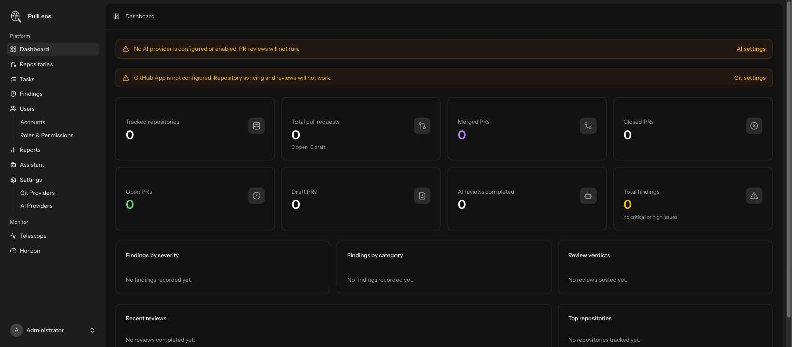

Getting started
First run and login
What you see the first time you open PullLens, and the two things it will ask you to set up.
Signing in
Open the URL the installer printed. Sign in with the administrator email and password from your .env.
There is no sign-up page
Public registration is disabled and the route does not exist — requesting /register returns 404. Every account is created by an administrator from Users. This is deliberate: an internet-facing instance with open registration would let anyone read your findings.
The empty dashboard
Before anything is connected, the dashboard shows two setup warnings. They disappear on their own once each piece is configured.

| Banner | What to do |
|---|---|
| No AI provider is configured or enabled | Reviews cannot run without a model. → Connect an AI provider |
| GitHub App is not configured | PullLens cannot see your repositories. → Connect GitHub |
The navigation
| Section | What lives there |
|---|---|
| Dashboard | System health and headline numbers. Details |
| Repositories | The repositories being watched, and each one's pull requests. Details |
| Tasks | Every unit of work delivered, searchable. Details |
| Findings | The backlog of problems found. Details |
| Users | Accounts, roles and per-repository access. Details |
| Reports | Eight reports covering delivery, quality and AI cost. Details |
| Assistant | Ask questions about your own metrics. Details |
| Settings | Git and AI provider configuration. |
| Monitor | Horizon (queue) and Telescope (debug). Administrators only. |
Recommended order
Connect the AI provider first. It takes a minute and you can verify it with the Test connection button before involving GitHub at all.